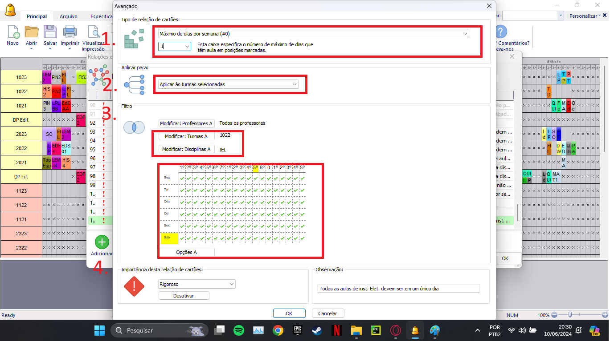

Detalhes do post:
Aulas da Mesma Disciplina em um Único Dia da Semana:
Descrição:Os docentes pedem para ministrar a mesma disciplina em apenas um dia da semana
Para resolver esse tipo de situação devemos restringir a colocação dos cartões das aulas usando as relações entre cartões avançados (imagem “acesso a aba de restrições avançadas”).
1- Selecionar o tipo de relação “Máximo de dias por semana(#0)”, e em seguida na caixa de texto abaixo especificar o número máximo de dias por semana da disciplina, neste caso vamos limitar a disciplina a apenas 1 dia na semana.
2- Selecionar a opção “Aplicar às turmas selecionadas”, visto que podem existir matérias que sejam dadas a uma mesma turma ou mais, e esta restrição alcançaria todas.
3- Utilize o filtro “Modificar Turmas” para escolher as turmas que serão atingidas pela restrição (aquelas que possuam a disciplina que o professor deseja limitar); Utilize o filtro “Modificar Disciplina” para escolher a disciplina que o professor deseja que seja concentrada em apenas 1 dia.
No quadro de horários selecionar todos os dias e períodos em que essa restrição será observada.
4- Selecionar a importância da Restrição, entre: baixa, normal, alta, rigoroso ou otimizar; de acordo com a importância a ser atribuída a essa relação na instituição..
Também escreva uma observação que facilite a identificação da restrição e explique seu objetivo.
Clique em “ok” no canto inferior para salvar a relação.